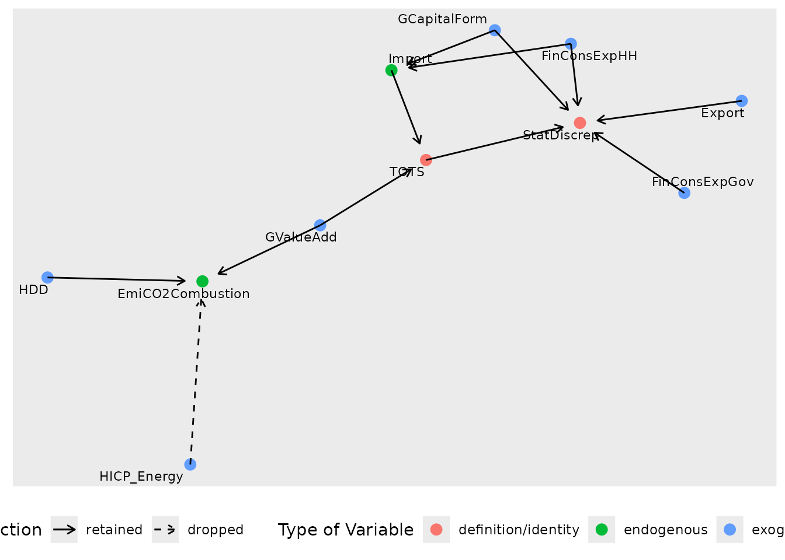
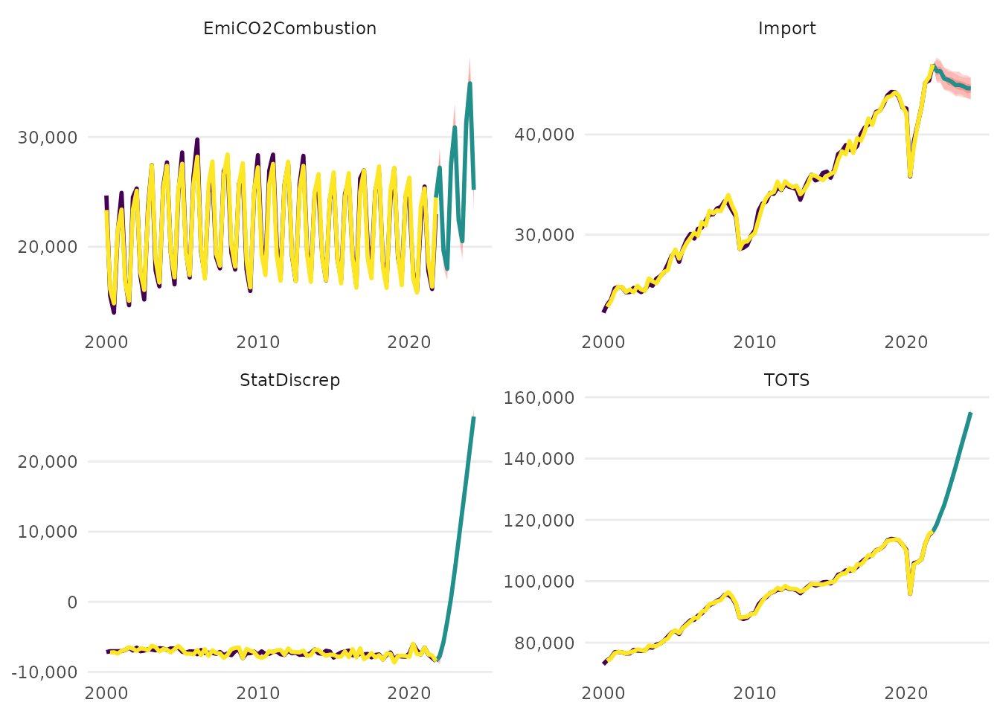

Example Workflow
example-workflow.RmdSetting up the Model
Dictionary
In this illustration, we will rely on the default dictionary that is
available from dict.
dict %>%
select(model_varname, database, dataset_id, variable_code, freq, geo) %>%
head()
#> model_varname database dataset_id variable_code freq geo
#> 1 TOTS <NA> <NA> TOTS <NA> <NA>
#> 2 GDP eurostat namq_10_gdp B1GQ q AT
#> 3 GValueAdd eurostat namq_10_a10 B1G q AT
#> 4 Export eurostat namq_10_gdp P6 q AT
#> 5 Import eurostat namq_10_gdp P7 q AT
#> 6 GCapitalForm eurostat namq_10_gdp P5G q AT
dict %>%
select(model_varname, database, dataset_id, variable_code, freq, geo) %>%
tail()
#> model_varname database
#> 35 HDD eurostat
#> 36 CDD eurostat
#> 37 EmiCH4Livestock edgar
#> 38 EmiCO2Industry edgar
#> 39 EmiCO2Combustion edgar
#> 40 EmiN2OTotal edgar
#> dataset_id
#> 35 nrg_chdd_m
#> 36 nrg_chdd_m
#> 37 https://jeodpp.jrc.ec.europa.eu/ftp/jrc-opendata/EDGAR/datasets/v70_FT2021_GHG/v70_FT2021_CH4_m_2000_2021.zip
#> 38 https://jeodpp.jrc.ec.europa.eu/ftp/jrc-opendata/EDGAR/datasets/v70_FT2021_GHG/v70_FT2021_CO2_m_2000_2021.zip
#> 39 https://jeodpp.jrc.ec.europa.eu/ftp/jrc-opendata/EDGAR/datasets/v70_FT2021_GHG/v70_FT2021_CO2_m_2000_2021.zip
#> 40 https://jeodpp.jrc.ec.europa.eu/ftp/jrc-opendata/EDGAR/datasets/v70_FT2021_GHG/v70_FT2021_N2O_m_2000_2021.zip
#> variable_code freq geo
#> 35 HDD m AT
#> 36 CDD m AT
#> 37 <NA> m AT
#> 38 <NA> m AT
#> 39 <NA> m AT
#> 40 <NA> m ATSpecification
We use a specification for illustrative purposes only. Our specification contains the following four modules/equations:
specification <- dplyr::tibble(
type = c(
"d",
"d",
"n",
"n"
),
dependent = c(
"StatDiscrep",
"TOTS",
"Import",
"EmiCO2Combustion"
),
independent = c(
"TOTS - FinConsExpHH - FinConsExpGov - GCapitalForm - Export",
"GValueAdd + Import",
"FinConsExpHH + GCapitalForm",
"HDD + HICP_Energy + GValueAdd"
)
)
print(specification)
#> # A tibble: 4 × 3
#> type dependent independent
#> <chr> <chr> <chr>
#> 1 d StatDiscrep TOTS - FinConsExpHH - FinConsExpGov - GCapitalForm - E…
#> 2 d TOTS GValueAdd + Import
#> 3 n Import FinConsExpHH + GCapitalForm
#> 4 n EmiCO2Combustion HDD + HICP_Energy + GValueAddThe first two equations are simply accounting identities. The third equation models imports as a function of final consumption expenditure of households and gross capital formation. The fourth equation models carbon emissions from combustion activities, which includes energy industries, manufacturing and construction, transport, and combustion activities in other sectors.The regressors are the number of heating degree days, the harmonised index of consumer prices for energy, and total gross value added.
Data
We differentiate between where data can be obtained from in principle versus where it should be obtained from actually in a specific model run. For example, a variable that is available on Eurostat can be downloaded from Eurostat but might have been saved locally from a previous model run. In order to save time, the user might prefer that the local data is used rather than re-downloading the data.
The dictionary specifies where the data for the different variables
can be obtained in principle. The column
dict$database may take one of four different values:
-
eurostatif the variable is available from Eurostat usingeurostat::get_eurostat(), -
edgarif the (emissions) variable is available EDGAR using a link, -
localif the variable is not available from the above two sources and is therefore provided as a local file by the user in the directoryinputdata_directory. This directory is searched for.rds,.csv, and.xlsxfiles, opens them consecutively, and searches for the variable. -
NAif the variable is constructed as an identity/definition
The argument primary_source in the main function
run_model() governs how the data is actually
obtained in this model run. Data that can in principle be downloaded
from eurostat or edgar can also be loaded
locally if it has been saved manually by the user or using the
save_to_disk argument in run_model() in a
previous model run. The argument primary_source can take
either the value "download" or "local", which
governs whether download or local input takes precedence for
eurostat and edgar variables.
This gives rise to the following combinations of obtaining data:
- variables with
dictionary$database == "local"are always searched for among the local files ofinputdata_directoryand an error is raised if they cannot be found there - variables with
dictionary$database == "eurostat"ordictionary$database == "egdar"- argument
primary_source == "download"first downloads all the variables (potentially updating the values) and only searches the local directory if the variables cannot be obtained that way (e.g. if there were problems with the download) - argument
primary_source == "local"first searches the local directory and only downloads those variables that could not be found locally
- argument
Here, we use variables that can in principle all be obtained
from either Eurostat or EDGAR but we use the local file
example-workflow-data.rds to save time when compiling the
vignette.
vars <- c("StatDiscrep", "TOTS", "Import", "EmiCO2Combustion", "FinConsExpHH",
"FinConsExpGov", "GCapitalForm", "Export", "GValueAdd", "HDD",
"HICP_Energy")
dict %>%
filter(model_varname %in% vars) %>%
pull(database)
#> [1] NA "eurostat" "eurostat" "eurostat" "eurostat" "eurostat"
#> [7] "eurostat" "eurostat" "eurostat" "eurostat" "edgar"To avoid downloading all those variables again, we will specify
primary_source == "local" and provide a
inputdata_directory path to the local directory when
calling run_model().
Running the Model
We are now ready to run the model and obtain an "aggmod"
object.
model <- run_model(specification = specification,
dictionary = dict,
inputdata_directory = ".",
primary_source = "local",
save_to_disk = NULL,
present = FALSE,
quiet = FALSE)
#> Local files are used.
#> The following files are opened and scanned for relevant data for the model.
#> example-workflow-data.rds
#> Note: If these include non-data files (with a likely different structure and hence likely errors), it is recommended to move all data files to a dedicated directory or to save them there using the 'save_to_disk' argument in the first place:
#>
#> You can quiet this message with quiet = TRUE.
#> Warning in load_or_download_variables(specification = module_order, dictionary
#> = dictionary, : Unbalanced panel, will lose more than 20\% of data when making
#> balanced
#>
#> --- Estimation begins ---
#> Estimating Import = FinConsExpHH + GCapitalForm
#> Estimating EmiCO2Combustion = HDD + HICP_Energy + GValueAdd
#> Constructing TOTS = GValueAdd + Import
#> Constructing StatDiscrep = TOTS - FinConsExpHH - FinConsExpGov - GCapitalForm - Export
class(model)
#> [1] "aggmod"We did not quiet the output, so we get some information
about the estimation.
We are told that local files are used, namely the file
"example-workflow-data.rds", which can be found in our
working directory "." from where the vignette is created.
Next, we obtain a warning that the panel is unbalanced, which means that
we have “ragged edges” that cause more than 20% of the data to be
discarded when limiting the sample to the time periods that are
available for all variables.
Finally, the estimation begins. The order of the modules is determined by how they are related to each other, starting with the modules that only depend on exogenous (unmodelled) variables and then gradually estimating the other modules in order to avoid any reverse dependencies.
Evaluating the Model
Now, we can have a look at the model results.
Individual Module Results
The different modules are stored in
model$module_collection, which is a tibble that stores the
datasets, independent and dependent variables, model arguments, and the
model itself as an "isat" object.
For example, taking a closer look at the estimated module for carbon emissions from combustion activities:
# extract the isat model object
co2module <- model$module_collection %>%
filter(dependent == "EmiCO2Combustion") %>%
pull(model) %>%
pluck(1)
class(co2module)
#> [1] "isat"
# inspect the estimated equation
print(co2module)
#>
#> Date: Mon Jan 22 10:07:12 2024
#> Dependent var.: y
#> Method: Ordinary Least Squares (OLS)
#> Variance-Covariance: Ordinary
#> No. of observations (mean eq.): 88
#> Sample: 1 to 88
#>
#> SPECIFIC mean equation:
#>
#> coef std.error t-stat p-value
#> mconst 1.65723367 1.57041425 1.0553 0.2945119
#> trend -0.00279700 0.00045517 -6.1449 3.051e-08 ***
#> ln.HDD 0.09832576 0.02549129 3.8572 0.0002327 ***
#> ln.GValueAdd 0.70874663 0.14185904 4.9961 3.434e-06 ***
#> q_2 -0.24228972 0.03085694 -7.8520 1.692e-11 ***
#> q_3 -0.27299057 0.05324977 -5.1266 2.049e-06 ***
#> q_4 -0.05980636 0.01166827 -5.1256 2.057e-06 ***
#> sis8 0.07357979 0.02039646 3.6075 0.0005401 ***
#> sis13 0.07758571 0.01864915 4.1603 8.022e-05 ***
#> ---
#> Signif. codes: 0 '***' 0.001 '**' 0.01 '*' 0.05 '.' 0.1 ' ' 1
#>
#> Diagnostics and fit:
#>
#> Chi-sq df p-value
#> Ljung-Box AR(1) 3.1001 1 0.07829 .
#> Ljung-Box ARCH(1) 1.8645 1 0.17210
#> ---
#> Signif. codes: 0 '***' 0.001 '**' 0.01 '*' 0.05 '.' 0.1 ' ' 1
#>
#> SE of regression 0.03458
#> R-squared 0.97412
#> Log-lik.(n=88) 175.70269We find that the number of heating degree days (HDD) and
gross value added (GValueAdd) are significant, while gets
model selection dropped the harmonised consumer price index for energy.
Both gross value added and heating degree days have a positive
coefficient meaning that they increase emissions, as we would
expect.
Both diagnostic tests of no autocorrelation and no autoregressive conditional heteroskedasticity pass.
Module Network
We can show the relationship between the different modules using the
network() function.
network(model) Each node represents a module and the different colours represent whether the variable is given by a definition/identity, whether it has been modelled as an endogenous variable depending on other models, and whether it is an exogenous variable input to the models.
An solid line arrow means that the variable has been retained during
model selection, while a dashed arrow means that the variable has been
dropped during model selection. Note again that HICP_Energy
was in the original specification but has been found to be
insignificant.
Forecasts
We can use our model to forecast the variables of our modules. This works for both the definition/identity modules and the endogenous modules. The user can either provide future values for the exogenous variables (e.g. corresponding to certain scenario assumptions) or use automatic AR models to forecast future values of the exogenous variables.
forecast <- forecast_model(model = model,
exog_predictions = NULL,
plot.forecast = FALSE)
#> No exogenous values provided. Model will forecast the exogenous values with an AR4 process (incl. Q dummies, IIS and SIS w 't.pval = 0.001').
#> Alternative is exog_fill_method = 'last'.
class(forecast)
#> [1] "aggmod.forecast"We did not specify paths for the exogenous regressors, so the output
informs us that AR(4) processes were used to project their paths. The
function returns an object of class "aggmod.forecast",
which can also be plotted.
plot(forecast)
Diagnostics
To obtain an overview of the diagnostic results for each endogenous
module, we can use the command diagnostics_model(). This
avoids having to look at all "isat" model objects
manually.
diagnostics_model(model)
#> module AR ARCH IIS SIS n indicator_share
#> 1 Import 0.34427814 0.3038267 5 0 87 0.05747126
#> 2 EmiCO2Combustion 0.07828958 0.1721016 0 2 88 0.02272727The diagnostics pass for both modules: we neither have evidence for autocorrelated errors nor for autoregressive conditional heteroskedasticity.
The output also shows how many impulse indicators (representing outliers) and step indicators (representing structural breaks of the mean) have been retained in each module, both in absolute and as a share of the observations.
Shiny App
Last but not least, we can get an overview and summary of the whole
aggregate model results in a Shiny app, which can be opened using the
present_model() command. The following code snippet is not
executed:
present_model(model)